Авторы и источники фотографий
Корпоративный архив
В архиве ROIN WORLD собраны панорамы стройплощадок, фотографии бригад и кадры из фильмов компании.
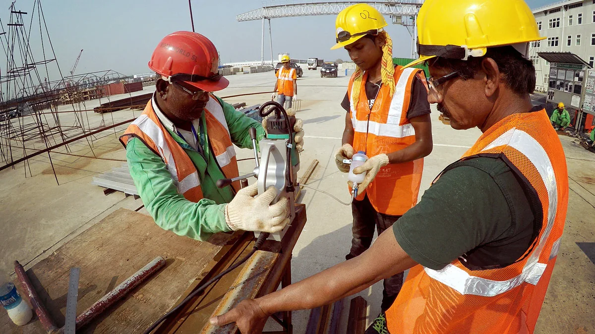
Бригада работает с арматурой на строительной площадкеROIN WORLD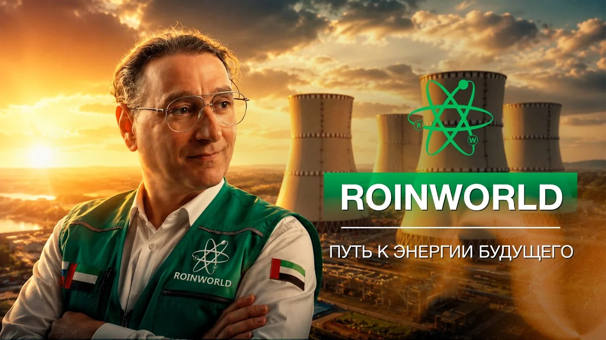
Официальная обложка корпоративного фильма ROIN WORLDROIN WORLD · YouTube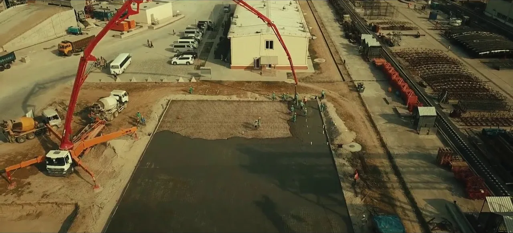
Кадр из ролика ROIN WORLD о строительстве учебного корпуса на АЭС «Руппур»ROIN WORLD · YouTube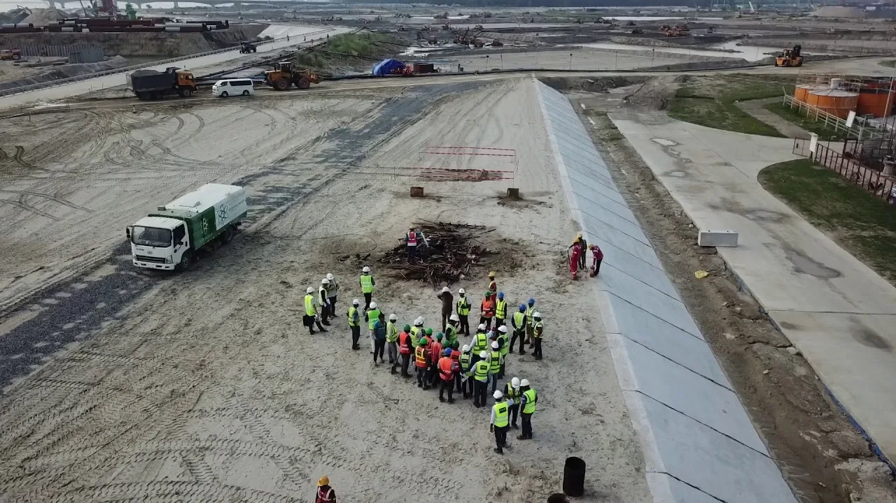
Кадр из фильма ROIN WORLD о противопожарных учениях на АЭС «Руппур»ROIN WORLD · YouTube Цех предварительной сборки на площадке 4.1 АЭС «Руппур», 2019ROIN WORLD · 4.1-1.jpg
Цех предварительной сборки на площадке 4.1 АЭС «Руппур», 2019ROIN WORLD · 4.1-1.jpg Панорама строительства энергетического комплексаROIN WORLD
Панорама строительства энергетического комплексаROIN WORLD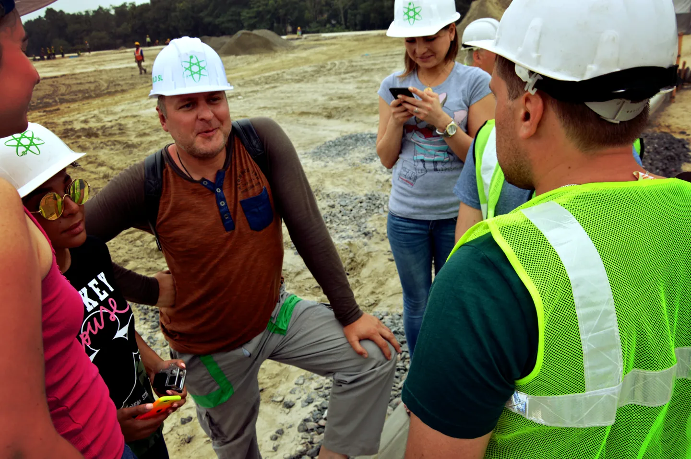
Рабочая встреча на строительной площадкеROIN WORLD Монтаж металлоконструкций на промышленной площадкеROIN WORLD
Монтаж металлоконструкций на промышленной площадкеROIN WORLD Разгрузка труб на строительной площадкеROIN WORLD
Разгрузка труб на строительной площадкеROIN WORLD Специалисты за совместной работой на площадкеROIN WORLD
Специалисты за совместной работой на площадкеROIN WORLD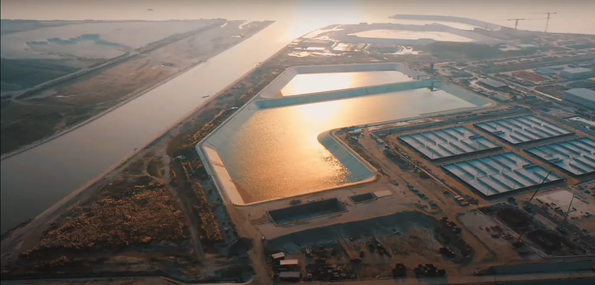
Индустриальные сооружения и водоёмы с высотыROIN WORLD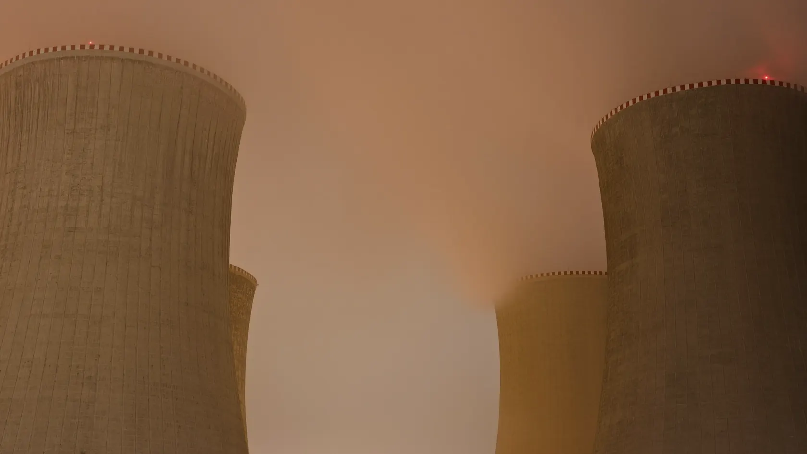
Промышленные здания и башенные краны при боковом освещенииROIN WORLD Монтаж кровли над пролётами стального каркасаROIN WORLD
Монтаж кровли над пролётами стального каркасаROIN WORLD Бригада бетонирует армированную плитуROIN WORLD
Бригада бетонирует армированную плитуROIN WORLD


Снимки объектов и иллюстрации
Подписи указывают автора или публикующую организацию. Ссылки ведут к источникам и опубликованным условиям использования. Для сайта подготовлены кадрированные копии разных размеров. Изменённые версии снимков CC BY-SA сохраняют лицензию оригинала.
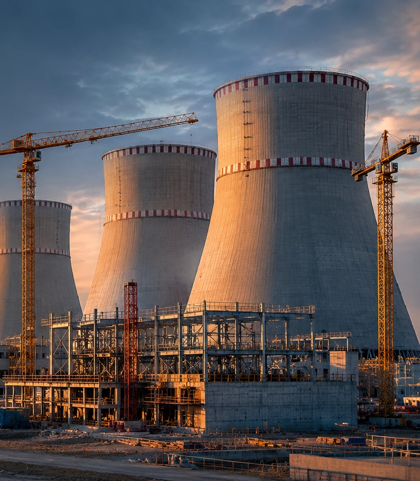
Иллюстрацию для главной страницы предоставил заказчик.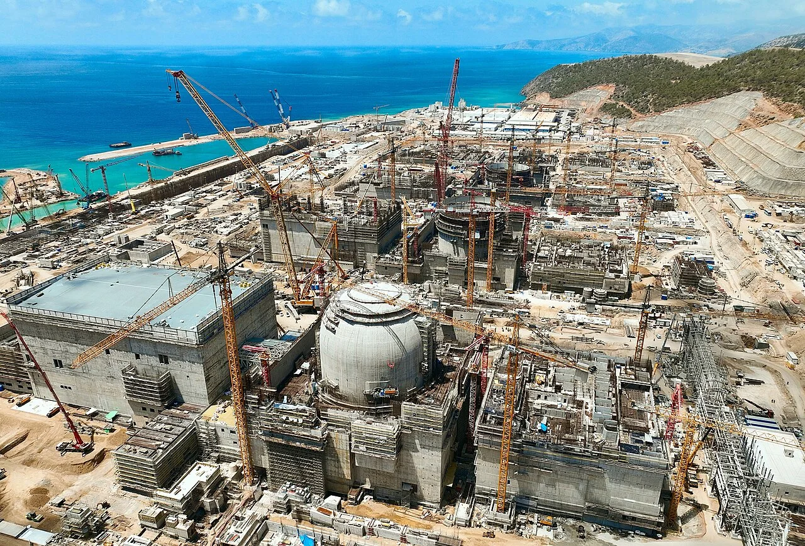
Строительная площадка АЭС «Аккую» на средиземноморском побережье Турции, 2023 год© АО «Аккую Нуклеар» / Rosatom Digital Press Office · CC BY 4.0 · Уменьшено и преобразовано в WebP.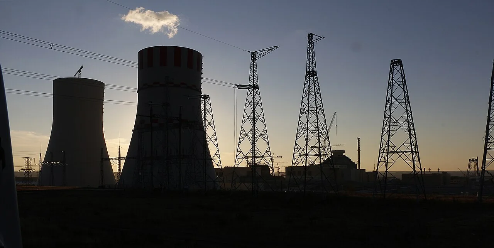
Градирни первого энергоблока Нововоронежской АЭС-2, октябрь 2014 годаSergbeer (ru.wikipedia.org) · CC BY-SA 3.0 · Уменьшено и преобразовано в WebP.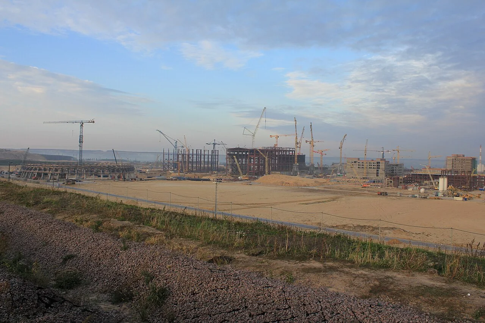
Панорама стройплощадки Нововоронежской АЭС-2, октябрь 2010 годаHullernuc · CC BY-SA 3.0 · Уменьшено и преобразовано в WebP.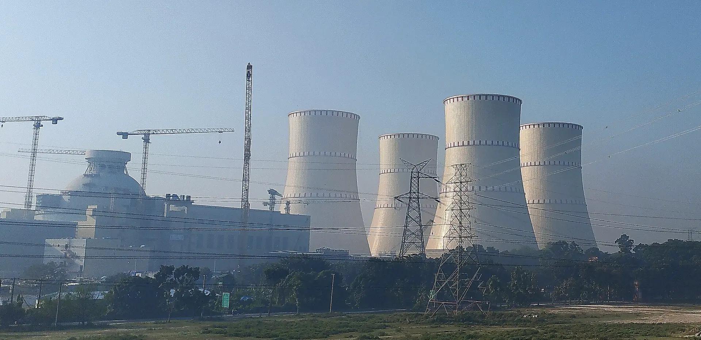
Градирни и строительство АЭС «Руппур», ноябрь 2024. Кадрирование и цветокоррекцияমোঃ সাকিবুল হাসান · CC BY 4.0 Ночная подсветка градирен АЭС «Руппур», май 2026ROCKY · CC BY-SA 4.0
Ночная подсветка градирен АЭС «Руппур», май 2026ROCKY · CC BY-SA 4.0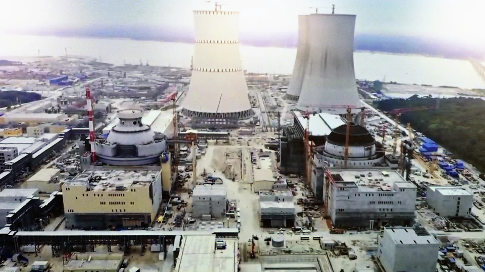
Площадка строительства АЭС «Руппур», 2023Dean Calma / IAEA · CC BY 2.0 Градирни АЭС «Руппур» и мост ХардингаJusujon1980 · CC BY-SA 4.0
Градирни АЭС «Руппур» и мост ХардингаJusujon1980 · CC BY-SA 4.0 Строительство АЭС «Эль-Дабаа», Египет, 2025Управление пресс-службы и информации Президента России / www.kremlin.ru · CC BY 4.0
Строительство АЭС «Эль-Дабаа», Египет, 2025Управление пресс-службы и информации Президента России / www.kremlin.ru · CC BY 4.0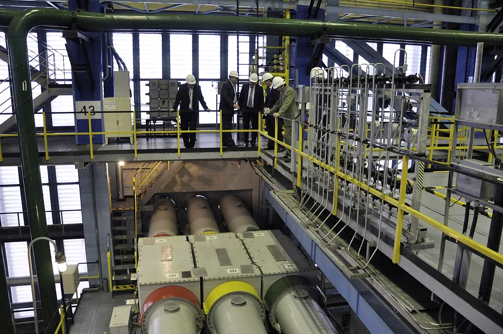
Действующая АЭС «Пакш» в Венгрии. Архивный снимок 2012 годаIAEA Imagebank · CC BY-SA 2.0 Хранение материалов на складских стеллажах. Иллюстративное фотоRuss Murray · Unsplash License
Хранение материалов на складских стеллажах. Иллюстративное фотоRuss Murray · Unsplash License Приготовление пищи на профессиональной кухне. Иллюстративное фотоAmos K · Unsplash License
Приготовление пищи на профессиональной кухне. Иллюстративное фотоAmos K · Unsplash License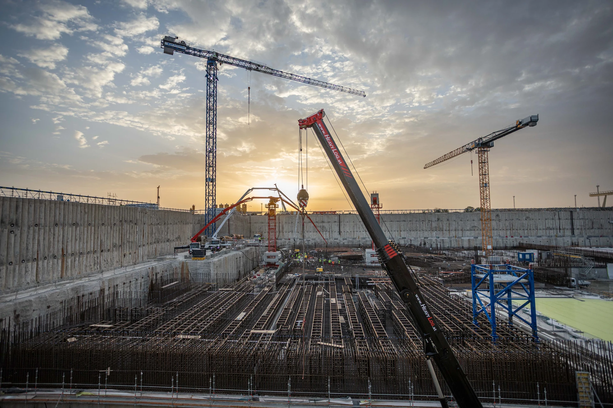
Краны над строительной площадкой «Пакш II», ВенгрияPaks II. Ltd. / Kövi Gergely Péter · Paks II. · Free to use photos · WebP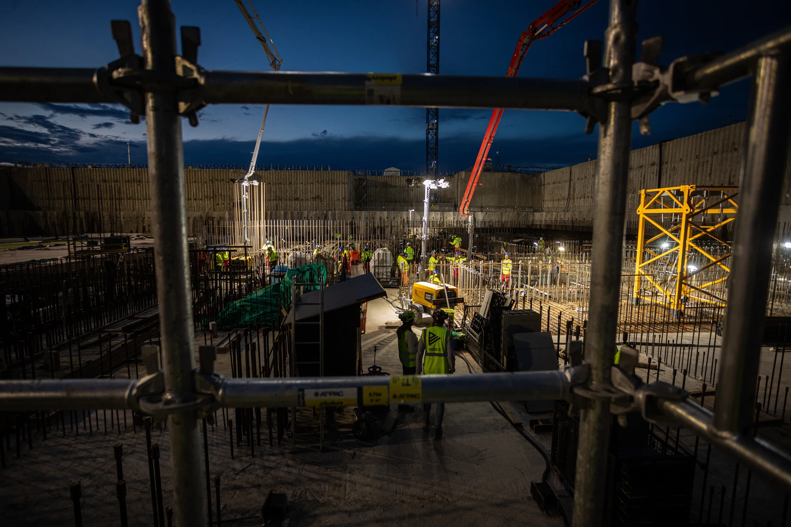
Ночная смена на стройке «Пакш II»Paks II. Ltd. / Kövi Gergely Péter · Paks II. · Free to use photos · WebP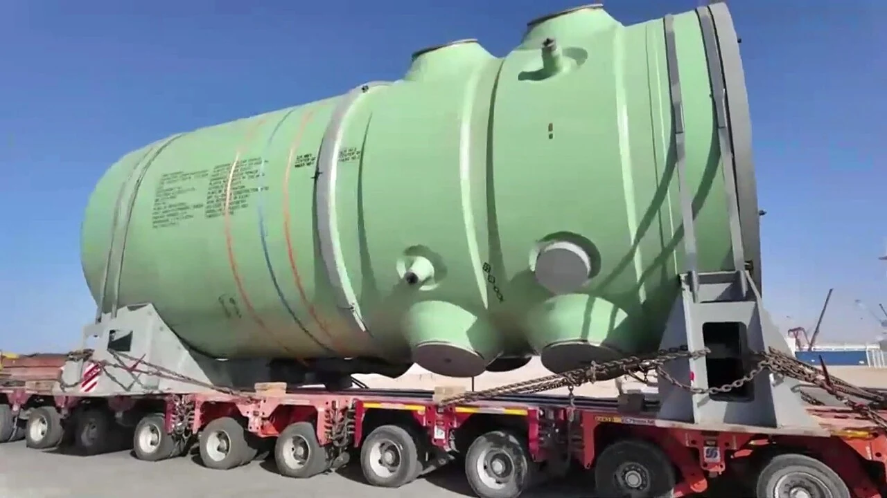
Перевозка оборудования для АЭС «Эль-Дабаа», кадр 2025 годаwww.kremlin.ru · CC BY 4.0 · WebP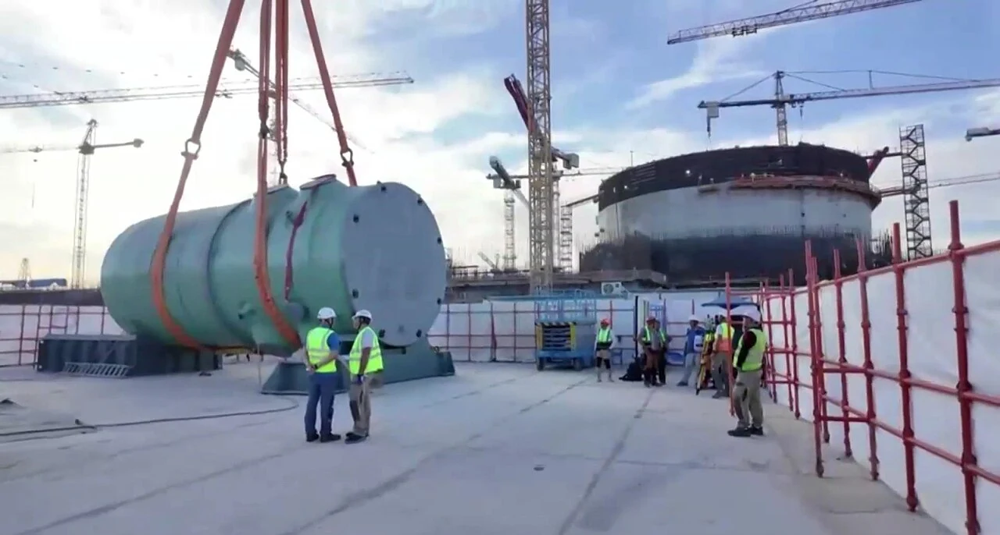
Подъём оборудования на площадке «Эль-Дабаа», кадр 2025 годаwww.kremlin.ru · CC BY 4.0 · WebP


Photo credits
Corporate archive
ROIN WORLD’s media library documents construction sites and the people working on them.
- Crew handling reinforcement at the construction siteROIN WORLD
- Official cover of the ROIN WORLD corporate filmROIN WORLD · YouTube
- Still from ROIN WORLD’s film on the training building at Rooppur NPPROIN WORLD · YouTube
- Still from ROIN WORLD’s film about a fire drill at RooppurROIN WORLD · YouTube
- Pre-assembly workshop at Rooppur NPP site 4.1, 2019ROIN WORLD · 4.1-1.jpg
- Aerial view of an energy construction siteROIN WORLD
- A team briefing on siteROIN WORLD
- Structural steelwork at an industrial siteROIN WORLD
- Unloading pipes on siteROIN WORLD
- Site personnel working togetherROIN WORLD
- Aerial view of industrial facilities and basinsROIN WORLD
- Industrial buildings and tower cranes in low sunROIN WORLD
- Roof panels over a wide-span steel frameROIN WORLD
- Crew placing concrete on a reinforced slabROIN WORLD
Site photographs and illustrations
Credits identify the photographer or publishing organisation. Links lead to the sources and their published terms of use. The site uses cropped and resized copies. Adapted CC BY-SA photographs retain the original licence.
- Homepage illustration supplied by the client.
- The Akkuyu construction site on Türkiye’s Mediterranean coast, 2023© АО «Аккую Нуклеар» / Rosatom Digital Press Office · CC BY 4.0 · Resized and converted to WebP.
- Cooling towers at Unit 1 of Novovoronezh II, October 2014Sergbeer (ru.wikipedia.org) · CC BY-SA 3.0 · Resized and converted to WebP.
- Overview of the Novovoronezh II construction site, October 2010Hullernuc · CC BY-SA 3.0 · Resized and converted to WebP.
- Cooling towers and construction at Rooppur NPP, November 2024. Cropped and colour correctedমোঃ সাকিবুল হাসান · CC BY 4.0
- Rooppur cooling towers at night, May 2026ROCKY · CC BY-SA 4.0
- Rooppur nuclear power plant under construction, 2023Dean Calma / IAEA · CC BY 2.0
- Rooppur cooling towers and Hardinge BridgeJusujon1980 · CC BY-SA 4.0
- Construction at El Dabaa, Egypt, 2025Управление пресс-службы и информации Президента России / www.kremlin.ru · CC BY 4.0
- The operating Paks nuclear power plant in Hungary, photographed in 2012IAEA Imagebank · CC BY-SA 2.0
- Goods on warehouse racks. Illustrative photographRuss Murray · Unsplash License
- Food preparation in a professional kitchen. Illustrative photographAmos K · Unsplash License
- Cranes on the Paks II construction site, HungaryPaks II. Ltd. / Kövi Gergely Péter · Paks II. · Free to use photos · WebP
- Night shift at the Paks II construction sitePaks II. Ltd. / Kövi Gergely Péter · Paks II. · Free to use photos · WebP
- Equipment in transit for El Dabaa, video still from 2025www.kremlin.ru · CC BY 4.0 · WebP
- Equipment being lifted at El Dabaa, video still from 2025www.kremlin.ru · CC BY 4.0 · WebP
مصادر الصور وحقوقها
أرشيف الشركة
توثّق مكتبة ROIN WORLD الإعلامية مشاهد من مواقع البناء وفرق العمل فيها.
- عمّال يجهّزون حديد التسليح في موقع البناءROIN WORLD
- الغلاف الرسمي للفيلم التعريفي لشركة ROIN WORLDROIN WORLD · YouTube
- لقطة من فيلم ROIN WORLD عن إنشاء مبنى التدريب في محطة روبور النوويةROIN WORLD · YouTube
- لقطة من فيلم ROIN WORLD عن تدريب مكافحة الحرائق في روبورROIN WORLD · YouTube
- ورشة التجميع المسبق في الموقع ٤.١ بمحطة روبور، ٢٠١٩ROIN WORLD · 4.1-1.jpg
- منظر جوي لأعمال إنشاء مجمّع للطاقةROIN WORLD
- اجتماع فريق العمل في الموقعROIN WORLD
- تركيب الهياكل الفولاذية في موقع صناعيROIN WORLD
- تفريغ الأنابيب في موقع البناءROIN WORLD
- متخصصون يعملون معاً في الموقعROIN WORLD
- منظر جوي للمنشآت الصناعية وأحواض المياهROIN WORLD
- مبانٍ صناعية ورافعات برجية تحت ضوء الشمس المائلROIN WORLD
- ألواح السقف فوق هيكل فولاذي واسع البحورROIN WORLD
- فريق يصب الخرسانة على بلاطة مسلحةROIN WORLD
صور المواقع والصور التوضيحية
تذكر التعليقات اسم المصوّر أو الجهة الناشرة، وتتيح الروابط الاطلاع على المصادر وشروط الاستخدام المنشورة. يستخدم الموقع نسخاً مقصوصة وبأحجام مختلفة. وتحتفظ الصور المعدّلة المنشورة بموجب CC BY-SA بترخيصها الأصلي.
- رسم توضيحي للصفحة الرئيسية قدّمه العميل.
- موقع بناء محطة أكويو على ساحل البحر المتوسط في تركيا عام ٢٠٢٣© АО «Аккую Нуклеар» / Rosatom Digital Press Office · CC BY 4.0 · صُغّرت الصورة وحُوّلت إلى WebP.
- برجا التبريد للوحدة الأولى في محطة نوفوفورونيج الثانية، أكتوبر ٢٠١٤Sergbeer (ru.wikipedia.org) · CC BY-SA 3.0 · صُغّرت الصورة وحُوّلت إلى WebP.
- مشهد عام لموقع بناء محطة نوفوفورونيج الثانية في أكتوبر ٢٠١٠Hullernuc · CC BY-SA 3.0 · صُغّرت الصورة وحُوّلت إلى WebP.
- أبراج التبريد وأعمال البناء بمحطة روبور، نوفمبر ٢٠٢٤. تم قص الصورة وضبط ألوانهاমোঃ সাকিবুল হাসান · CC BY 4.0
- أبراج تبريد محطة روبور ليلاً، مايو ٢٠٢٦ROCKY · CC BY-SA 4.0
- موقع إنشاء محطة روبور النووية، ٢٠٢٣Dean Calma / IAEA · CC BY 2.0
- أبراج تبريد روبور وجسر هاردينغJusujon1980 · CC BY-SA 4.0
- أعمال الإنشاء في محطة الضبعة، مصر، ٢٠٢٥Управление пресс-службы и информации Президента России / www.kremlin.ru · CC BY 4.0
- صورة أرشيفية من محطة باكس القائمة عام ٢٠١٢IAEA Imagebank · CC BY-SA 2.0
- بضائع على رفوف مستودع. صورة توضيحيةRuss Murray · Unsplash License
- إعداد الطعام في مطبخ مهني. صورة توضيحيةAmos K · Unsplash License
- رافعات في موقع بناء باكس ٢ في المجرPaks II. Ltd. / Kövi Gergely Péter · Paks II. · Free to use photos · WebP
- الوردية الليلية في موقع بناء باكس ٢Paks II. Ltd. / Kövi Gergely Péter · Paks II. · Free to use photos · WebP
- نقل معدات لمحطة الضبعة، لقطة من عام ٢٠٢٥www.kremlin.ru · CC BY 4.0 · WebP
- رفع معدات في موقع الضبعة، لقطة من عام ٢٠٢٥www.kremlin.ru · CC BY 4.0 · WebP
Créditos fotográficos
Archivo de la empresa
La fototeca de ROIN WORLD documenta las obras de construcción y las personas que trabajan en ellas.
- Equipo trabajando con armaduras en la obraROIN WORLD
- Portada oficial de la película corporativa de ROIN WORLDROIN WORLD · YouTube
- Fotograma del vídeo de ROIN WORLD sobre la construcción del edificio de formación en RooppurROIN WORLD · YouTube
- Fotograma del vídeo de ROIN WORLD sobre un simulacro de incendio en RooppurROIN WORLD · YouTube
- Taller de premontaje en la zona 4.1 de las obras de la central de Rooppur, 2019ROIN WORLD · 4.1-1.jpg
- Vista aérea de una obra del sector energéticoROIN WORLD
- Reunión de trabajo en la obraROIN WORLD
- Montaje de estructuras de acero en una obra industrialROIN WORLD
- Descarga de tuberías en la obraROIN WORLD
- Personal de obra trabajando en equipoROIN WORLD
- Vista aérea de instalaciones y balsas industrialesROIN WORLD
- Edificios industriales y grúas torre con el sol bajoROIN WORLD
- Paneles de cubierta sobre una estructura de acero de gran luzROIN WORLD
- Equipo de obra vertiendo hormigón en una losa armadaROIN WORLD
Fotografías de las obras e imágenes ilustrativas
Los créditos identifican al fotógrafo o a la entidad que publicó la imagen. Los enlaces remiten a las fuentes y a sus condiciones de uso publicadas. El sitio utiliza copias recortadas y de distintos tamaños. Las adaptaciones de fotografías CC BY-SA conservan la licencia original.
- Ilustración de la portada facilitada por el cliente.
- Obras de la central de Akkuyu en la costa mediterránea de Turquía, 2023© АО «Аккую Нуклеар» / Rosatom Digital Press Office · CC BY 4.0 · Imagen reducida y convertida a WebP.
- Torres de refrigeración de la primera unidad de Novovorónezh II en octubre de 2014Sergbeer (ru.wikipedia.org) · CC BY-SA 3.0 · Imagen reducida y convertida a WebP.
- Vista general de las obras de Novovorónezh II en octubre de 2010Hullernuc · CC BY-SA 3.0 · Imagen reducida y convertida a WebP.
- Torres de refrigeración y obras en la central nuclear de Rooppur, noviembre de 2024. Imagen recortada y con corrección de colorমোঃ সাকিবুল হাসান · CC BY 4.0
- Torres de refrigeración de Rooppur por la noche, mayo de 2026ROCKY · CC BY-SA 4.0
- Obras de la central nuclear de Rooppur, 2023Dean Calma / IAEA · CC BY 2.0
- Torres de refrigeración de Rooppur y puente de HardingeJusujon1980 · CC BY-SA 4.0
- Obras en El Dabaa, Egipto, 2025Управление пресс-службы и информации Президента России / www.kremlin.ru · CC BY 4.0
- La central nuclear de Paks en funcionamiento, fotografiada en 2012IAEA Imagebank · CC BY-SA 2.0
- Mercancía en estanterías de almacén. Fotografía ilustrativaRuss Murray · Unsplash License
- Preparación de alimentos en una cocina profesional. Fotografía ilustrativaAmos K · Unsplash License
- Grúas en las obras de Paks II, HungríaPaks II. Ltd. / Kövi Gergely Péter · Paks II. · Free to use photos · WebP
- Turno de noche en las obras de Paks IIPaks II. Ltd. / Kövi Gergely Péter · Paks II. · Free to use photos · WebP
- Traslado de equipos para El Dabaa, fotograma de 2025www.kremlin.ru · CC BY 4.0 · WebP
- Izado de equipos en El Dabaa, fotograma de 2025www.kremlin.ru · CC BY 4.0 · WebP
A fényképek forrásai
Vállalati archívum
A ROIN WORLD fotótára az építkezéseket és az ott dolgozó embereket mutatja be.
- Munkacsapat betonacéllal dolgozik az építési területenROIN WORLD
- A ROIN WORLD vállalati filmjének hivatalos borítóképeROIN WORLD · YouTube
- Képkocka a ROIN WORLD filmjéből a ruppuri oktatási épület kivitelezésérőlROIN WORLD · YouTube
- Képkocka a ROIN WORLD ruppuri tűzvédelmi gyakorlatáról készült videóbólROIN WORLD · YouTube
- Előszerelő műhely a Ruppuri Atomerőmű 4.1-es építési területén, 2019ROIN WORLD · 4.1-1.jpg
- Energetikai létesítmény építése madártávlatbólROIN WORLD
- Helyszíni munkaértekezletROIN WORLD
- Acélszerkezetek szerelése egy ipari építkezésenROIN WORLD
- Csövek kirakodása az építkezésenROIN WORLD
- Közös munka az építési területenROIN WORLD
- Ipari létesítmények és medencék madártávlatbólROIN WORLD
- Ipari épületek és toronydaruk súrlófénybenROIN WORLD
- Tetőpanelek egy nagy fesztávú acélszerkezetenROIN WORLD
- Egy vasalt lemez betonozásaROIN WORLD
Helyszíni fotók és illusztrációk
A képeknél feltüntettük a fotós vagy a közreadó szervezet nevét. A hivatkozások a forrásokhoz és a közzétett felhasználási feltételekhez vezetnek. A webhelyen vágott és átméretezett másolatok szerepelnek. A CC BY-SA fényképek átdolgozott változataira az eredeti licenc vonatkozik.
- A nyitókép illusztrációját a megrendelő biztosította.
- Az Akkuyui Atomerőmű építkezése Törökország földközi-tengeri partvidékén, 2023© АО «Аккую Нуклеар» / Rosatom Digital Press Office · CC BY 4.0 · Átméretezett, WebP formátumú változat.
- A Novovoronyezsi II. Atomerőmű első blokkjának hűtőtornyai 2014 októberébenSergbeer (ru.wikipedia.org) · CC BY-SA 3.0 · Átméretezett, WebP formátumú változat.
- A Novovoronyezsi II. Atomerőmű építési területe 2010 októberébenHullernuc · CC BY-SA 3.0 · Átméretezett, WebP formátumú változat.
- Hűtőtornyok és építési munkák a Ruppuri Atomerőműben, 2024. november. Vágott, színkorrigált felvételমোঃ সাকিবুল হাসান · CC BY 4.0
- A ruppuri hűtőtornyok éjszaka, 2026. májusROCKY · CC BY-SA 4.0
- A Ruppuri Atomerőmű építkezése, 2023Dean Calma / IAEA · CC BY 2.0
- A ruppuri hűtőtornyok és a Hardinge hídJusujon1980 · CC BY-SA 4.0
- Építkezés az egyiptomi El-Dabaában, 2025Управление пресс-службы и информации Президента России / www.kremlin.ru · CC BY 4.0
- A működő Paksi Atomerőmű egy 2012-es archív felvételenIAEA Imagebank · CC BY-SA 2.0
- Áru a raktári polcokon. IllusztrációRuss Murray · Unsplash License
- Ételkészítés üzemi konyhában. IllusztrációAmos K · Unsplash License
- Daruk a Paks II. építkezésénPaks II. Ltd. / Kövi Gergely Péter · Paks II. · Free to use photos · WebP
- Éjszakai műszak a Paks II. építkezésénPaks II. Ltd. / Kövi Gergely Péter · Paks II. · Free to use photos · WebP
- Berendezések szállítása az El-Dabaa erőműhöz, 2025-ös filmkockawww.kremlin.ru · CC BY 4.0 · WebP
- Berendezés emelése az El-Dabaa építkezésén, 2025-ös filmkockawww.kremlin.ru · CC BY 4.0 · WebP